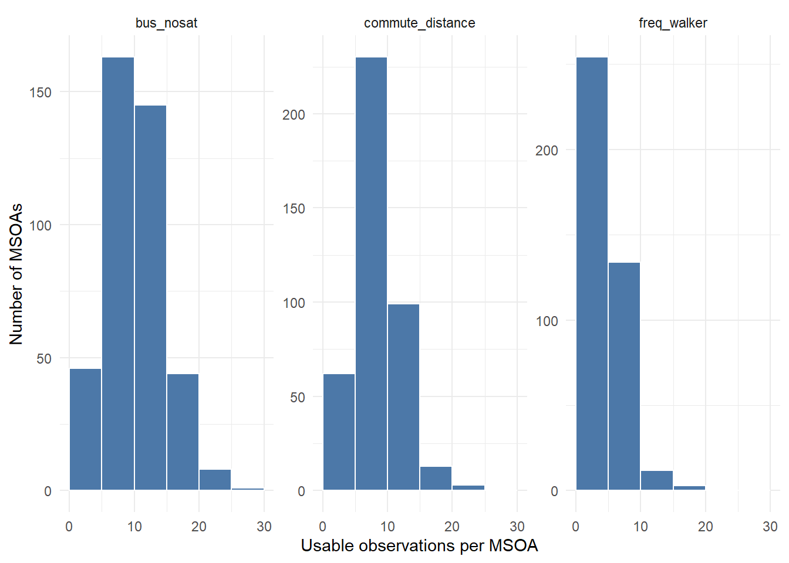

library(dplyr)
library(readr)
library(stringr)
library(ggplot2)
# Download raw input files into a temp folder
zip_tmp <- tempfile(fileext = ".zip")
url <- "https://raw.githubusercontent.com/shaunhoang/tutorial-site/main/data/tutorial-raw-data.zip"
download.file(url, zip_tmp, mode = "wb")
unzip(zip_tmp, exdir = tempdir())
base_path <- file.path(tempdir(), "raw")Example
This work example demonstrates the step-by-step of creating the appropriate input files for the Small-Area Estimation (SAE) methods to follow. In the process, we will also address the various decisions that researchers need to make.
1 Preparation
1.1 Understanding the tutorial dataset
The survey dataset used in this tutorial is a simulated dataset based on the National Survey for Wales 2022-23-a cross-sectional survey, conducted annually to provide a snapshot of the Welsh population, covering topics include health, education, climate change, visits to the outdoors, public service satisfaction, material deprivation, internet access, and the Welsh language.
by treating it with stratified randomisation and randomised upsampling
Note
In the original NSW dataset, obtained via UK Data Service, the Local Authority (LA) is the sole spatial identifier and the survey’s sampling stratification variable. To both ensure data privacy and create a more granular spatial identifier for tutorial purposes, the example simulated dataset was created using:
- Stratified randomisation: Survey responses were first split by Local Authority and their variables were randomised column-wise to preserve totals by Local Authority.
- Randomised upsampling: Survey responses were assigned a random MSOA that intersects with their recorded Local Authority to simulate a higher-resolution dataset for tutorial purposes.

1.2 Defining the estimands
The most important first step is to define the estimands, i.e. what is being estimated, for which population, and at what geography. For this tutorial, we specifically want to estimate indicators related to commuting, bus transport, and walking/cycling behaviour in Wales. The estimands could be expressed like this:
| Est. # | Measure | Outcome | Target population | Estimation geography |
|---|---|---|---|---|
| 1 | Mean | Commute distance | Commuters | MSOAs in Wales |
| 2 | Share | Dissatisfaction with bus services | Adults who rode a bus in the last 12 months | MSOAs in Wales |
| 3 | Rate | Walking as main transport daily per 1,000 residents | All residents | MSOAs in Wales |
Specifying these elements early is critical as they dictate the technical requirements for the estimation process. For example:
- Measure: Estimating a
meanorsharecan be done directly with a compatible analysis weight. Estimating a populationrate(per 1k) requires a compatible grossing weight and/or known domain sizes (residents per MSOA). - Weight: Estimating the share of recent adult bus riders dissatisfied with bus services requires a weight calibrated for the adult population, since applying a general population weight would bias the result by including children.
- Geography: With a sample size of 11,000 respondents in Wales, if we chose to estimate at the OA level (~10,000 small areas) instead of MSOA, we could leave the vast majority of OAs with zero or one respondent.
In practice, this step is reiterative based on data availability and other restrictions. It is worth starting out with the most relevant estimands and refining them further after diagnosing the quality of the estimation results.
1.3 Preparing indicators and weight variables
The next stage involves preparing the indicator variables and aligning them with the appropriate estimation geography and survey weights, as defined by the estimand.
| Est. # | Indicator | Variable coding rule | Measure | Estimation geography | Weight variable |
|---|---|---|---|---|---|
| 1 | commute_distance |
[TravWkDist] Numeric commute distance in miles, non-commuters are coded NA |
Mean | MSOA | SampleAdultWeight, analysis weight |
| 2 | bus_nosat |
[BusOverSat, Bus12M] Binary: 1 if rode a bus in the last 12 months and is fairly or very dissatisfied; 0 if rode a bus in the last 12 months and is not dissatisfied; NA otherwise |
Share | MSOA | SampleAdultWeight, analysis weight |
| 3 | freq_walker |
[AtFrqWlk10] Binary: 1 if walking for transport daily |
Rate (per 1k) | MSOA | SampleTravelWeight, analysis weight, to be scaled to an MSOA-level grossing weight |
1.4 Selecting covariates
Covariates, or auxiliary variables, are the backbone of SAE because they lend information to areas with low or no survey data to improve their precision. Covariates should be available for every estimation areas and should have a clear relationship to the estimands.
For this worked example, The Census 2021 bulk downloads are a practical starting point because they provide rich and consistent datasets aggregated at all UK geographies. Each indicator will have at its disposal covariates that are its most logical predictors, as follows:
| Est. # | Indicator | Covariates (from UK Census ’21) | Geography |
|---|---|---|---|
| 1 | commute_distance |
- Population density (TS006)- Share of commute by car/van ( TS061)- Share of households with car/van ( TS045) |
MSOA |
| 2 | bus_nosat |
- Population density (TS006)- Share of commute by bus/minibus ( TS061)- Share of households without car/van ( TS045)- Share of households deprived in 2+ dimensions ( TS011) |
MSOA |
| 3 | freq_walker |
- Population density (TS006)- Share of commute by bike/walk ( TS061)- Share of households without car/van ( TS045)- Share of population in good health ( TS037) |
MSOA |
With this information we can proceed to process the raw survey dataset to produce inputs necessary for the estimation pipeline.
2 Practical: Code Implementation
2.1 Load survey data
Load the survey datasets and identify the unique identifier of survey respondents, and recode it as unit_id for easier handling downstream. For each respondent, the simulated survey microdata also provides two spatial identifiers: Local Authority and MSOA of residence. The three estimands are estimated at MSOA level, while Local Authority remains useful as the survey stratification variable.
# Load dataset
nsw_raw <- read_csv(
file.path(base_path, "nsw_2223_msoa_la.csv")
) |>
rename(unit_id = CaseNo)
# tibble of la and msoa code
survey_spatial_ids <- nsw_raw |>
select(unit_id,la_code,msoa_code)
head(survey_spatial_ids)# A tibble: 6 × 3
unit_id la_code msoa_code
<dbl> <chr> <chr>
1 222300001 W06000001 W02000005
2 222300002 W06000001 W02000002
3 222300003 W06000001 W02000002
4 222300004 W06000001 W02000007
5 222300005 W06000001 W02000005
6 222300006 W06000001 W020000092.2 Construct Indicators
Next, we can start constructing the indicators from the variables based on the coding rules set out above.
# Construct the three indicators
survey_indicators <- nsw_raw |>
transmute(
unit_id,
commute_distance = as.numeric(TravWkDist),
bus_nosat = case_when(
Bus12M != 1 ~ NA_real_,
BusOverSat %in% c(4, 5) ~ 1, # Fairly or very dissatisfied
!is.na(BusOverSat) ~ 0,
TRUE ~ NA_real_
),
freq_walker = case_when(
is.na(AtFrqWlk10) ~ NA_real_,
AtFrqWlk10 %in% 1 ~ 1, # Walk at least daily
TRUE ~ 0
)
)
head(survey_indicators)# A tibble: 6 × 4
unit_id commute_distance bus_nosat freq_walker
<dbl> <dbl> <dbl> <dbl>
1 222300001 NA NA NA
2 222300002 NA NA NA
3 222300003 NA NA NA
4 222300004 NA NA NA
5 222300005 NA 1 NA
6 222300006 NA NA 12.3 Select weight variables
Next, filter for the relevant weight variables from the survey relevant to our estimands.
survey_weights <- nsw_raw |>
transmute(
unit_id,
msoa_code,
SampleAdultWeight,
SampleTravelWeight
)SampleTravelWeight is the analysis weight for the subsampled active-travel module, from which freq_walker was derived. This weight variable was designed to represent the general population of Wales. To estimate the number of freq_walker per 1,000 residents, these analysis weights should be scaled to grossing weights (i.e., WalesTravelWeight) using population totals per MSOA available in the UK Census 2021 data as domain sizes.
# Load the Welsh MSOA population totals as the domain sizes
domain_sizes_population_msoa <- read_csv(
file.path(base_path, "census2021-ts007-msoa.csv"),
show_col_types = FALSE
) |>
filter(str_starts(`geography code`, "W")) |>
transmute(
domain_id = `geography code`,
domain_name = geography,
domain_size = `Age: Total; measures: Value`
)
head(domain_sizes_population_msoa)# A tibble: 6 × 3
domain_id domain_name domain_size
<chr> <chr> <dbl>
1 W02000001 Isle of Anglesey 001 8402
2 W02000002 Isle of Anglesey 002 6367
3 W02000003 Isle of Anglesey 003 10633
4 W02000004 Isle of Anglesey 004 7401
5 W02000005 Isle of Anglesey 005 8165
6 W02000006 Isle of Anglesey 006 7042# Scaling analysis weight into grossing weight (see formula in the previous chapter)
survey_weights <- survey_weights |>
left_join(
domain_sizes_population_msoa |>
select(domain_id, domain_size),
by = c("msoa_code" = "domain_id")
) |>
group_by(msoa_code) |>
mutate(
travel_weight_sum = sum(SampleTravelWeight, na.rm = TRUE),
WalesTravelWeight = if_else(
!is.na(SampleTravelWeight) & travel_weight_sum != 0, SampleTravelWeight * domain_size / travel_weight_sum,
NA_real_
)
) |>
ungroup() |>
select(unit_id, SampleAdultWeight, SampleTravelWeight, WalesTravelWeight)
head(survey_weights)# A tibble: 6 × 4
unit_id SampleAdultWeight SampleTravelWeight WalesTravelWeight
<dbl> <dbl> <dbl> <dbl>
1 222300001 0.647 NA NA
2 222300002 0.344 NA NA
3 222300003 1.34 NA NA
4 222300004 1.31 NA NA
5 222300005 0.676 NA NA
6 222300006 0.729 0.550 707.2.4 Check missingness
For each indicator, check for missingness overall (number of null values) and whether there are areas with no respondents.
# Join the spatial identifiers, coded indicators and calculated weights together
survey_inputs <- survey_spatial_ids |>
left_join(survey_indicators, by = "unit_id") |>
left_join(survey_weights, by = "unit_id")
# Calculate non-nulls and coverage for each indicator at estimation geography
indicator_observations <- bind_rows(
survey_inputs |>
transmute(
indicator = "commute_distance",
domain_id = msoa_code,
value = commute_distance,
weight = SampleAdultWeight
),
survey_inputs |>
transmute(
indicator = "bus_nosat",
domain_id = msoa_code,
value = bus_nosat,
weight = SampleAdultWeight
),
survey_inputs |>
transmute(
indicator = "freq_walker",
domain_id = msoa_code,
value = freq_walker,
weight = WalesTravelWeight
)
)
indicator_area_summary <- indicator_observations |>
filter(!is.na(value), !is.na(weight)) |>
count(indicator, domain_id, name = "non_missing") |>
group_by(indicator) |>
summarise(
geography = "MSOA",
areas_total = nrow(domain_sizes_population_msoa),
areas_n_0 = areas_total - n_distinct(domain_id),
areas_n_lt2 = areas_n_0 + sum(non_missing < 2),
.groups = "drop"
)
indicator_area_summary# A tibble: 3 × 5
indicator geography areas_total areas_n_0 areas_n_lt2
<chr> <chr> <int> <int> <int>
1 bus_nosat MSOA 408 1 1
2 commute_distance MSOA 408 1 2
3 freq_walker MSOA 408 5 30This summary highlights areas with no data (areas_n_0) and areas with fewer than two usable observations (areas_n_lt2). For two indicators, bus_nosat and commute_distance, the number of very-low-sample areas is below 10, which is not a major concern at this stage. freq_walker has many more very-low-sample areas.
indicator_area_counts <- indicator_observations |>
filter(!is.na(value), !is.na(weight)) |>
count(indicator, domain_id, name = "non_missing")
ggplot(indicator_area_counts, aes(x = non_missing)) +
geom_histogram(binwidth = 5, boundary = 0, fill = "#4C78A8", colour = "white") +
facet_wrap(~ indicator, scales = "free_y") +
labs(
x = "Usable observations per MSOA",
y = "Number of MSOAs"
) +
theme_minimal()
This is consistent with the fact that the active-travel questions used to construct freq_walker were only asked to a subsample. It will probably benefit the most from model-based estimation later, although the final decision is best made after looking at the direct estimates and their uncertainty in the next step.
2.5 Aggregate covariates
The final preparation step is to assemble the covariates chosen previously for each estimand and aggregate them to the estimation geography required (in our case, MSOA).
# Read a Census 2021 aggregate table and keep Welsh areas only
read_census <- function(topic_code, geo_level) {
file_name <- paste0("census2021-", topic_code, "-", geo_level, ".csv")
read_csv(file.path(base_path, file_name), show_col_types = FALSE) |>
filter(str_starts(`geography code`, "W")) |>
rename(domain_id = `geography code`, domain_name = geography)
}# Total population (TS007)
msoa_population <- domain_sizes_population_msoa |>
transmute(
domain_id,
cov_total_population = domain_size
)
# Population density (TS006)
msoa_density <- read_census("ts006", "msoa") |>
transmute(
domain_id,
domain_name,
cov_pop_density = `Population Density: Persons per square kilometre; measures: Value`
)
# Travel to work (TS061)
msoa_travel <- read_census("ts061", "msoa") |>
transmute(
domain_id,
commute_total = `Method of travel to workplace: Total: All usual residents aged 16 years and over in employment the week before the census`,
commute_car = `Method of travel to workplace: Driving a car or van` +
`Method of travel to workplace: Passenger in a car or van`,
commute_bus = `Method of travel to workplace: Bus, minibus or coach`,
commute_bikewalk = `Method of travel to workplace: Bicycle` +
`Method of travel to workplace: On foot`,
cov_share_car_commute = if_else(commute_total > 0, commute_car / commute_total, NA_real_),
cov_share_bus_commute = if_else(commute_total > 0, commute_bus / commute_total, NA_real_),
cov_share_commute_bikewalk = if_else(commute_total > 0, commute_bikewalk / commute_total, NA_real_)
) |>
select(
domain_id,
cov_share_car_commute,
cov_share_bus_commute,
cov_share_commute_bikewalk
)
# Car availability (TS045)
msoa_cars <- read_census("ts045", "msoa") |>
transmute(
domain_id,
household_total = `Number of cars or vans: Total: All households`,
households_no_car = `Number of cars or vans: No cars or vans in household`,
cov_share_hh_nocar = if_else(
household_total > 0,
households_no_car / household_total,
NA_real_
),
cov_share_hh_withcar = if_else(
household_total > 0,
(household_total - households_no_car) / household_total,
NA_real_
)
) |>
select(
domain_id,
cov_share_hh_nocar,
cov_share_hh_withcar
)
# Household deprivation (TS011)
msoa_deprivation <- read_census("ts011", "msoa") |>
transmute(
domain_id,
household_total = `Household deprivation: Total: All households; measures: Value`,
households_deprived = `Household deprivation: Household is deprived in two dimensions; measures: Value` +
`Household deprivation: Household is deprived in three dimensions; measures: Value` +
`Household deprivation: Household is deprived in four dimensions; measures: Value`,
cov_share_hh_deprived = if_else(
household_total > 0,
households_deprived / household_total,
NA_real_
)
) |>
select(domain_id, cov_share_hh_deprived)
# Health (TS037)
msoa_health <- read_census("ts037", "msoa") |>
transmute(
domain_id,
health_total = `General health: Total: All usual residents`,
good_health = `General health: Very good health` + `General health: Good health`,
cov_share_good_health = if_else(
health_total > 0,
good_health / health_total,
NA_real_
)
) |>
select(domain_id, cov_share_good_health)
covariates_msoa <- list(
msoa_density,
msoa_population,
msoa_travel,
msoa_cars,
msoa_deprivation,
msoa_health
) |>
purrr::reduce(left_join, by = "domain_id")
covariates_msoa# A tibble: 408 × 11
domain_id domain_name cov_pop_density cov_total_population
<chr> <chr> <dbl> <dbl>
1 W02000001 Isle of Anglesey 001 62.8 8402
2 W02000002 Isle of Anglesey 002 53.1 6367
3 W02000003 Isle of Anglesey 003 2298. 10633
4 W02000004 Isle of Anglesey 004 99.2 7401
5 W02000005 Isle of Anglesey 005 100 8165
6 W02000006 Isle of Anglesey 006 152. 7042
7 W02000007 Isle of Anglesey 007 68.5 6894
8 W02000008 Isle of Anglesey 008 831. 5951
9 W02000009 Isle of Anglesey 009 55.9 8035
10 W02000010 Gwynedd 001 3112. 8626
# ℹ 398 more rows
# ℹ 7 more variables: cov_share_car_commute <dbl>, cov_share_bus_commute <dbl>,
# cov_share_commute_bikewalk <dbl>, cov_share_hh_nocar <dbl>,
# cov_share_hh_withcar <dbl>, cov_share_hh_deprived <dbl>,
# cov_share_good_health <dbl>2.6 Export
The next workbooks do not depend on local exports from this workbook. However, if preferred, export into your data/clean/ folder the following components:
Indicator microdata with weight and survey strata
ind_weight_commute_distance.csv, with analysis adult weight;ind_weight_bus_nosat.csv, with analysis adult weight;ind_weight_freq_walker.csv, withWalesTravelWeight, an MSOA-level grossing weight for the active-travel module.
Each indicator microdata file contains the same key columns:
| Column | Meaning |
|---|---|
unit_id |
Survey respondent identifier. |
domain_id |
Estimation area ID. |
strata |
Survey stratification variable. For NSW, this is the Local Authority, la_code. |
indicator |
Coded outcome variable. |
weight |
Survey weight matched to the estimand. |
Covariates by estimation area
covariates_msoa.csv, with MSOA-level covariates for all three indicators;
output_dir <- file.path("..", "data", "clean")
dir.create(output_dir, recursive = TRUE, showWarnings = FALSE)
ind_weight_commute_distance <- survey_inputs |>
transmute(
unit_id,
domain_id = msoa_code,
strata = la_code,
indicator = commute_distance,
weight = SampleAdultWeight
)
ind_weight_bus_nosat <- survey_inputs |>
transmute(
unit_id,
domain_id = msoa_code,
strata = la_code,
indicator = bus_nosat,
weight = SampleAdultWeight
)
ind_weight_freq_walker <- survey_inputs |>
transmute(
unit_id,
domain_id = msoa_code,
strata = la_code,
indicator = freq_walker,
weight = WalesTravelWeight
)
write_csv(
ind_weight_commute_distance,
file.path(output_dir, "ind_weight_commute_distance.csv")
)
write_csv(
ind_weight_bus_nosat,
file.path(output_dir, "ind_weight_bus_nosat.csv")
)
write_csv(
ind_weight_freq_walker,
file.path(output_dir, "ind_weight_freq_walker.csv")
)
write_csv(
as.data.frame(covariates_msoa),
file.path(output_dir, "covariates_msoa.csv")
)
# Create data/tutorial-clean-data.zip
data_dir <- file.path("..", "data")
old_wd <- setwd(data_dir)
tryCatch(
{
if (file.exists("tutorial-clean-data.zip")) {
file.remove("tutorial-clean-data.zip")
}
utils::zip(
zipfile = "tutorial-clean-data.zip",
files = list.files("clean", pattern = "\\.csv$", full.names = TRUE)
)
},
finally = setwd(old_wd)
)